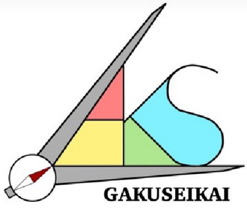
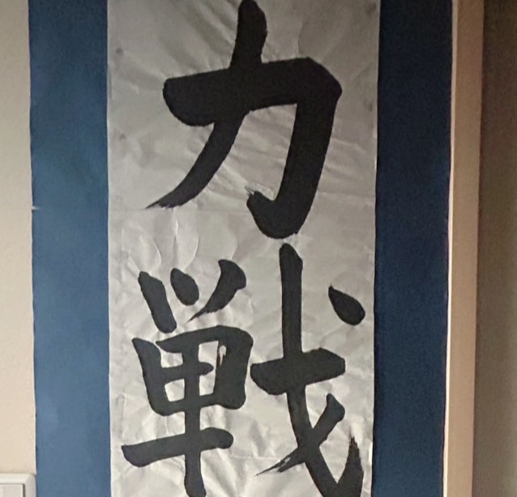
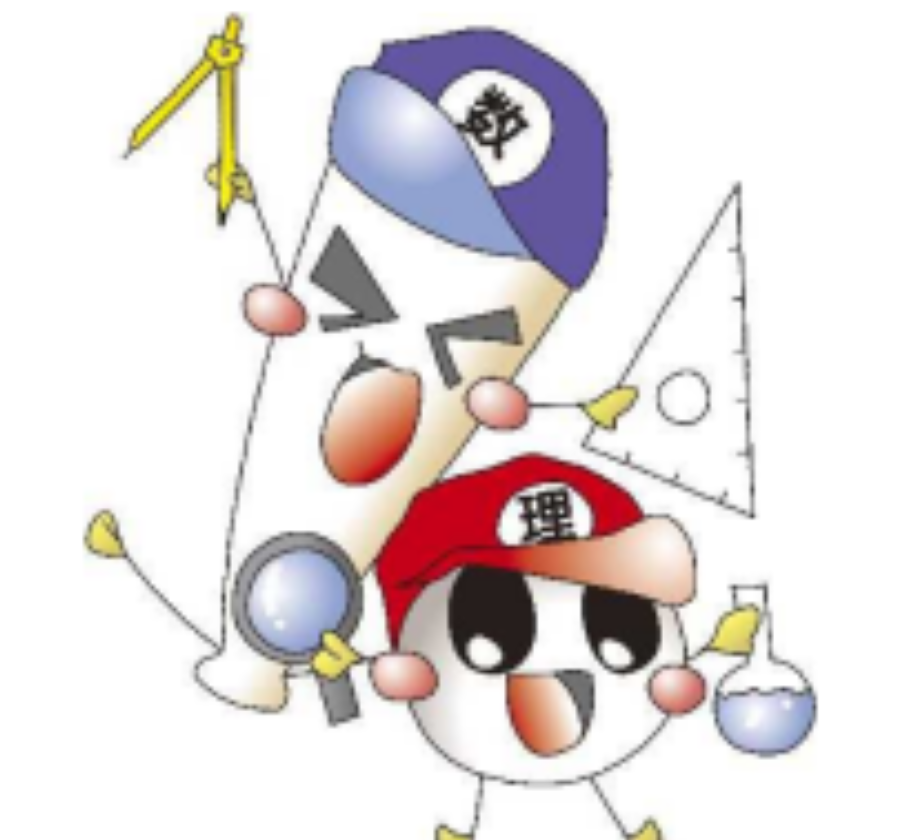
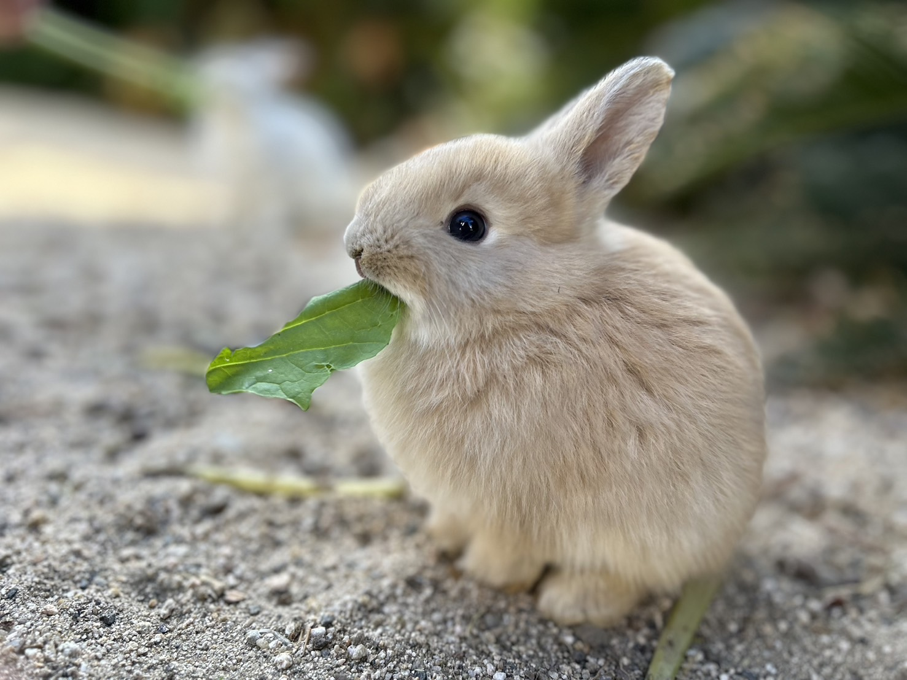
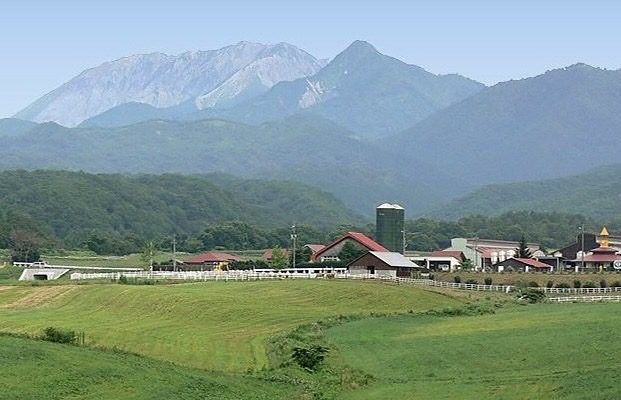
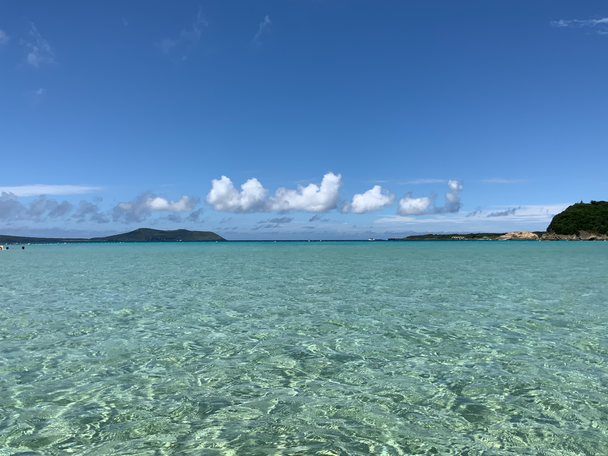
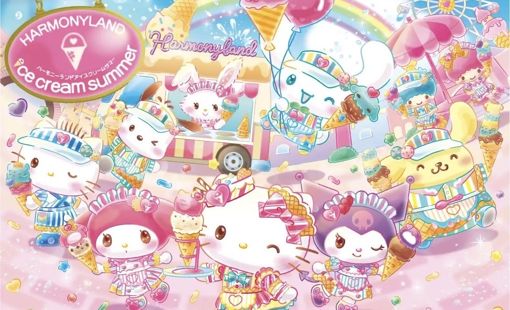
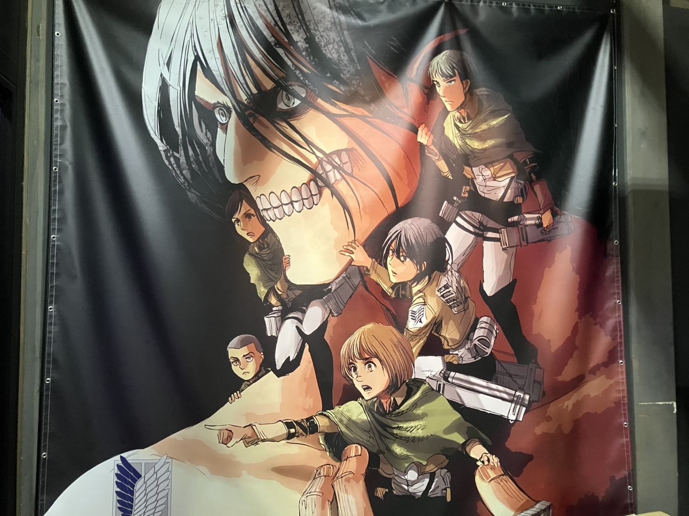

My Portfolio
About Me
Nakashima Kokoro
明石工業高等専門学校 機械工学科（２４ｓ）
２００９年１月１９日生まれ、兵庫県明石市出身、三姉妹の長女です。
機械工学科では機械加工学や設計製図、工作実習や機械工学実習などの実習もしています。
専門科目の中では、設計製図が特に好きです。
好きな食べ物はオムライス、お寿司、果物（もも・ぶどう・いちご・さくらんぼ）や海鮮（いくら・牡蠣・ほたて）です。
これまでに書道、水泳、ピアノ、体操、ダンスを習っていました。
書道は、小学１年生から現在まで続けています。
高専に入ってから合唱部に所属していて、歌うことが好きです。
Club Activity
-
学生会執行部 会計局
学生会では明葉祭（文化祭）やスポーツ大会の運営、会計局では伝票処理などをしています。２年生では副局長をしています。
学生会 会計局
-
明石高専合唱団 Fons Musicae
花や赤とんぼなどの童謡、Ave MariaやKyrieといったラテン語の曲、Greetingsやおんがくなど合唱曲もうたいます♪
合唱部
-
Web制作研究部
HTML&CSSの勉強をして、webサイトを作ります。主に学校行事の明葉祭やスポーツ大会、高専祭のホームページを制作します。
Web研
-
ESS(English Speaking Society)
部のメンバーや留学生と一緒に英語を使って会話をしたり、ゲームをしたりします。１年生の時には高専祭のバザーでベビーカステラを作りました。
ESS
-
SA(Student Ambassador)
明石高専に来る、たくさんの留学生と色々なイベントを企画して仲良くなります。書道イベントや浴衣イベント、茶道イベントなどがあります。
SA
-
明石市立天文科学館ボランティア
展示解説担当や子どもたちと遊ぶキッズルーム担当があります。また、ほしとも学生部というサークルにも参加しています。
天ボラ
-
書道
小さい頃から字を書くことが好きです。中学校では、生徒会で書記会計をしていました。お便りを作るのが楽しかったです。
書道
-
情報科学部 植物班
中学校では情報科学部に所属していました。班ごとに、植物、魚類、両生類、甲殻類など生物を育てていました。温かい部活ですごく楽しかったです。
情報科学部

Hobby
カードゲーム・ボードゲーム
２人で遊ぶときのおすすめはクアルト、３～４人の場合はAlgoやDr.EUREKA、５人ならナポレオン（トランプのゲーム）、大人数ならナンジャモンジャや人狼ゲーム。
メンバーが集まった時には、マーダーミステリーも盛り上がります。
ノートまとめ
色んな文房具を使ってノートにまとめるのが好きです。
テスト前に自分が理解しやすいように自分の言葉でコメントを書いています。
授業ノートだけでなく、テスト前には暗記したいことを別のノートにまとめることもあります。
ゲーム・アニメ
Nintendo Switchでよく妹やいとこと遊びます。特にSplatoonが好きです。
アニメは、スポーツものや転生ものが好きですが、いろいろ見てます。
P.S. Nintendo Switchのマリオカートセットが当たってとっても嬉しいです！
Favorite Spots

うさぎ島
（広島県 竹原市）
https://www.takeharakankou.jp/spot/4304
たくさんのうさぎに会える島。島までは船に乗って行きました。時期によっては子ウサギがたくさんいて、餌を食べるところがとてもかわいいです。（２０２５年２月２２日）

蒜山
（岡山県 真庭市）
https://www.okayama-kanko.jp/spot/11439
夏は塩釜冷泉の釣り堀で魚釣り、秋はホースパークで乗馬、冬はベアバレーでスキー、そしていつでも楽しいジョイフルパーク～！その前の「すいとんぼう」というお店の蒜山焼そばがおいしいです（１０回以上）

五島列島
（長崎県 五島市）
https://goto.nagasaki-tabinet.com/
福江島の頓泊海水浴場。海がとてもきれいでした。鬼面台からの景色も美しかったです。夜には天文台から満天の星空を見ました。（２０２２年８月）

ハーモニーランド
（大分県 速見郡 日出町）
https://www.harmonyland.jp/
サンリオのキャラクターたちに会えるテーマパーク。ステージを見るのがすきです。いつもキャラクターのマグカップの中にプリンが入ったデザートを食べます。（３回ほど）

青山剛昌ふるさと館
（鳥取県 北栄町）
https://www.gamf.jp/
いろいろな作品の原画がたくさんあって、１枚１枚じっくり見ているととても時間がかかりました。直筆のメッセージなど盛りだくさんで楽しかったです！（２０２２年８月）

進撃の巨人 in HITA ミュージアム
（大分県 日田市）
https://shingeki-hita.com/spot/017.html
巨大なパネルに迫力のある原画が展示してありました。場面ごとに先生のメッセージが書かれていて、世界観がさらに深まりました。ぜひ進撃の巨人を読んで（見て）訪れてみてください♪（２０２４年８月）